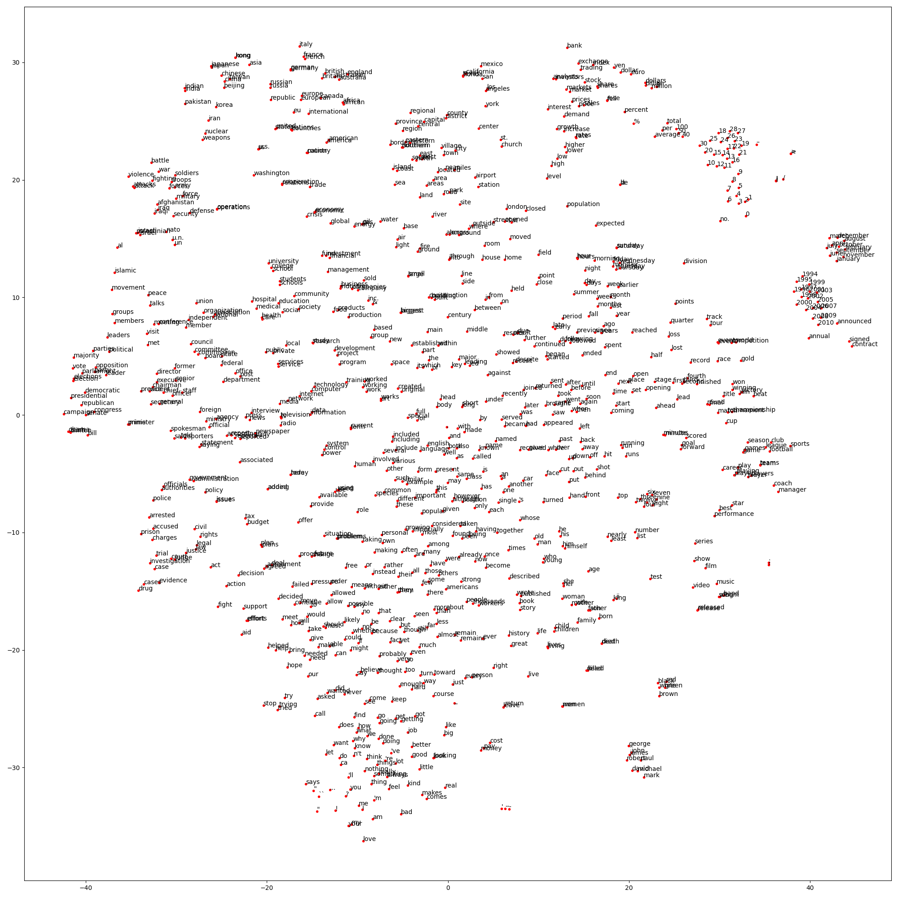
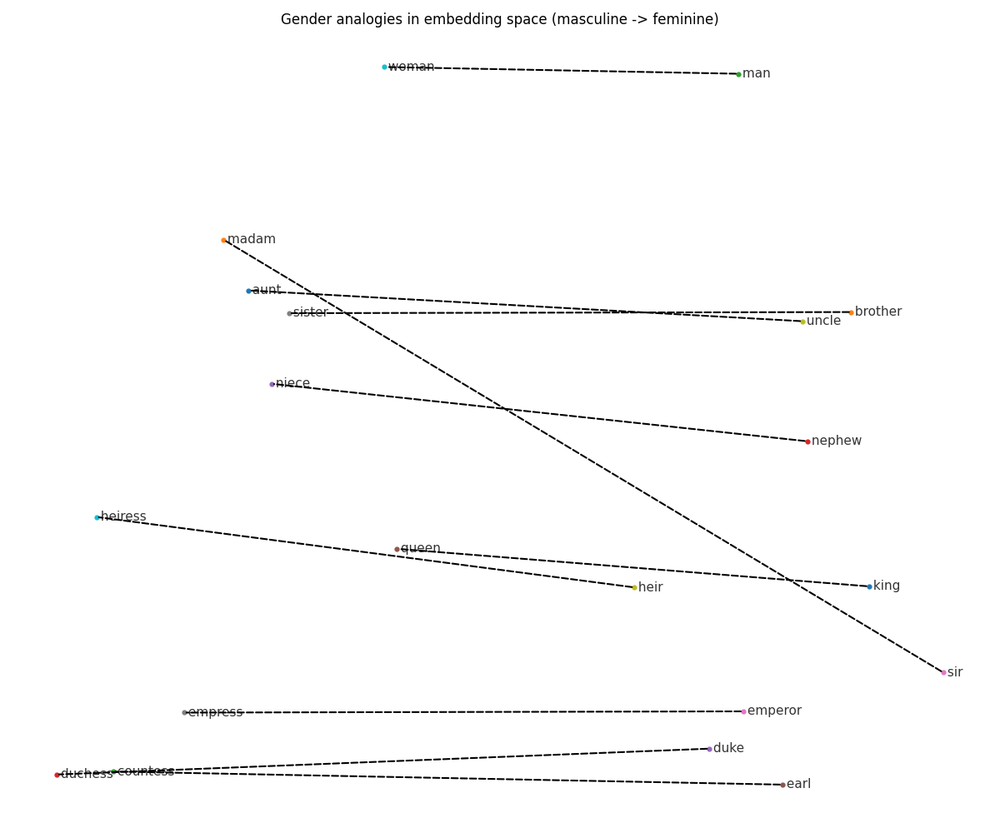

Exercise Class 3
This week we start from this repository.
Exercise 1 - Embeddings
The following exercise is on word embeddings. We will use a small version of the GloVe embeddings. We choose those over the vanilla Word2Vec embeddings as the file size is smaller and they are easier to download. There are two tests for the following exercises here.
Download a set of
GloVeembeddings from here. Choose the smallest fileglove.2024.wikigiga.50d.zip(290 MB download size) on the website. Unpack the zip file to thedatadirectory in your project directory. You should now have following file in yourdatafolder:wiki_giga_2024_50_MFT20_vectors_seed_123_alpha_0.75_eta_0.075_combined.txtMake a file called
src/ai4h/models/embeddings.pyi.e. a new module for code related to embeddings.Insert the following function in your new module:
from pathlib import Path from numpy.typing import NDArray import numpy as np def load_txt_embeddings(path: Path | str, max_vocab: int | None = None): vocab: list[str] = [] vectors = [] with open(path, "r", encoding="utf-8") as f: for i, line in enumerate(f): parts = line.rstrip().split() word, vec = parts[:-50], parts[-50:] vocab.append("".join(word)) vectors.append([float(x) for x in vec]) if max_vocab and i + 1 >= max_vocab: break vectors = np.array(vectors, dtype=np.float32) return vocab, vectorsRead only the first \(100,000\) vectors using the
max_vocabparameter.Load the embeddings using
load_txt_embeddings. That should give you the vocabulary (a list of strings) and a(100_000, 50)matrix of embedding vectors stacked along the rows (each embedding is a(1, 50)row vector). Normalize the embedding vectors i.e. divide each vector by its norm. To do this compute the norms usingnp.linalg.normand setkeepdims=Truefor correct broadcasting when doing the following division.Add
matplotlibas a project dependency usinguv add. Then project the first \(1000\) normalized embeddings to a two-dimensional space usingTSNE(n_components=2, random_state=0)which can be imported as:from sklearn.manifold import TSNE. Plot the result.You should get something that looks like:

Interpret the plot.
Create a class
WordEmbeddingswith the following signature:class WordEmbeddings: def __init__(self, unit_vectors: NDArray[np.float32], vocab: list[str]): self.unit_vectors = unit_vectors self.vocab = vocab self.word2idx = _Replace
_with code that creates a mapping from words to index.E.g.
word2idx["king"]should return703askingis the 704th entry in the vocabulary.Create a method
vecin theWordEmbeddingsclass with the following signature:def vec(self, word: str) -> NDArray[np.float32]: raise NotImplementedError()It should use return a normalized vector corresponding to
word. Replaceraise NotImplementedError()with your code. Use theword2idxmapping to select the index corresponding to theword.Test it with:
pytest tests/test_embeddings.py -k test_vec
Recall from the lecture that the cosine similarity between two vectors \(v, w \in \mathbb{R}^{d}\) can be computed as: \[\begin{aligned} \mathrm{cos}(v, w) = \frac{v^{T}w}{\Vert v \Vert \Vert w \Vert}. \end{aligned}\] If we normalize the vectors, i.e. set \(\tilde{v} := v/\Vert v \Vert\) and \(\tilde{w} := w/\Vert w \Vert\), then the cosine similarity equals the dot product between the normalized vectors: \[\begin{aligned} \mathrm{cos}(\tilde{v}, \tilde{w}) = \tilde{v}^{T}\tilde{w}. \end{aligned}\] Hence for some normalized query vector \(q\) and the normalized embeddings matrix \(\tilde{W} \in \mathbb{R}^{n \times d}\) we can quickly compute the cosine similarity between the query and all the embeddings as \[\begin{aligned} \tilde{W} q, \end{aligned}\] yielding a \(n\)-dimensional vector with the cosine similarity between \(q\) and each of the \(n\) embeddings. We will use this in the following exercise.
Note: In our example \(n = 100,000\) and \(d=50\) (we chose the 50-dimensional GloVe vectors).
Create a method
most_similarin theWordEmbeddingsclass with the following signature:def most_similar( self, query_vec: NDArray[np.float32], topk: int = 10, exclude: tuple[str, ...] | None = None, ) -> list[tuple[str, float]]: raise NotImplementedError()It should:
- normalize the input
query_vecvector - computes the cosine similarity scores between
query_vecand each embedding inself.unit_vectorsusing the trick above - set all scores for the words in
exlude(if any) equal to-np.inf(such that they are ignored in the search) - find the
topkcosine similarity scores - return a list of tuples with
(word, score)for thetopkcosine similarity scores ofquery_vecvector with the embeddings.
Test it with:
pytest tests/test_embeddings.py -k test_most_similar- normalize the input
Add
tabulateas a project dependency usinguv add. Next initialize theWordEmbeddingsusing the normalized embeddings. Then try to construct a table usingtabulatewith the 10 most similar words tofrogand print it out. You should get something like:word score -------- -------- snake 0.887447 toad 0.851514 lizard 0.832843 monkey 0.809783 dwarf 0.803363 rabbit 0.802861 snakes 0.778667 squirrel 0.776353 serpent 0.773521 tailed 0.771302Recall that word embeddings can be used to solve so-called “analogy problems”. For instance, computing the difference in normalized embeddings
king - manand adding it towomanshould yield a vector close toqueeni.e.:king - man + woman ≈ queen. We will try to verify this in this exercise using ourmost_similarmethod.Loop over the analogies below and:
- construct a query vector by doing the correct arithmetic with the embeddings of the first three words
- pass the query vector into
most_similarand print out a table of the top 10 most similar vectors to the query
analogies = [
# the fourth word should be close to the linear combination of the first
# three measured by the cosine similarity distance
("king", "man", "woman", "queen"),
("paris", "france", "italy", "rome"),
("berlin", "germany", "spain", "madrid"),
("walking", "walk", "swim", "swimming"),
]E.g. for the first you should get:
word score
------------- --------
queen 0.865907
daughter 0.796838
throne 0.78326
eldest 0.775711
elizabeth 0.775592
princess 0.764289
marriage 0.761845
mother 0.757996
granddaughter 0.755066
father 0.754288where queen is the most similar with a score of 0.865907.
- Try to replicate figure 5.9(a) on p. 18 from SLP3 ch. 5. Do this using a PCA projection of the relevant embeddings. Import PCA using:
from sklearn.decomposition import PCA. Setn_components=2, random_state=2025when initializing the PCA class. For your convenience, here is a list of pair relevant words:
pairs = [
("brother", "sister"),
("nephew", "niece"),
("uncle", "aunt"),
("man", "woman"),
("sir", "madam"),
("heir", "heiress"),
("king", "queen"),
("duke", "duchess"),
("earl", "countess"),
("emperor", "empress"),
]You should get something that looks like:

Interpret the plot. Also try to do the following vector arithmetic
king - man + womanand see where you end up in the plot. Explain.
Exercise 2 - PyTorch
We will use the cpu version of PyTorch. To install this using
uvadd the following to yourpyproject.tomlfile:[[tool.uv.index]] name = "pytorch-cpu" url = "https://download.pytorch.org/whl/cpu" explicit = true [tool.uv.sources] torch = [ { index = "pytorch-cpu" }, ] torchvision = [ { index = "pytorch-cpu" }, ]After having done this run
uv add torch torchvisionin your shell.Go through the quickstart here with some modifications:
- Instead of using
FashionMNISTuse theMNISTdataset that we used last week; i.e. changedatasets.FashionMNISTtodatasets.MNISTin the tutorial. - Instead of building the model shown in the quickstart, build the same model that we used last week now in PyTorch i.e. a two-layer neural network with:
- a hidden layer of dimension
30 - an output layer of dimension
10 - a sigmoid activation function in the hidden layer
- a hidden layer of dimension
- Compare the score of your final model with the score of your model from last week.
- Instead of using
Note: one thing to appreciate (and that is easier to appreciate after having gone through backpropagation last week) when using PyTorch and its automatic differentiation engine is that the computation of gradients of the loss function wrt. the model parameters and the parameter update is done with just two lines of code:
loss.backward() # compute gradients optimizer.step() # update parameters optimizer.zero_grad() # reset gradientsVery neat indeed, although easy to not fully appreciate if you haven’t done the backpropagation calculations before.
Anoter note: there are no tests for this exercise.